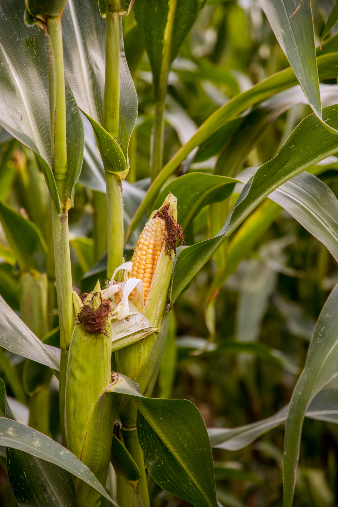

<ion-content>
  
</ion-content>
<ion-tabs>
  <ion-tab-bar slot="bottom" class="tab-colors">

    <ion-tab-button tab="ocorrencia" class="but-color">
      <ion-icon name="warning-sharp"></ion-icon>
      <ion-label>Ocorrências</ion-label>
    </ion-tab-button>

    <ion-tab-button tab="atividade" class="but-color">
      <ion-icon name="leaf-sharp"></ion-icon>
      <ion-label>Atividades</ion-label>
    </ion-tab-button>

    <ion-tab-button tab="login" class="but-color">
      <ion-icon name="exit-sharp"></ion-icon>
      <ion-label>Sair</ion-label>
    </ion-tab-button>

  </ion-tab-bar>
</ion-tabs>
